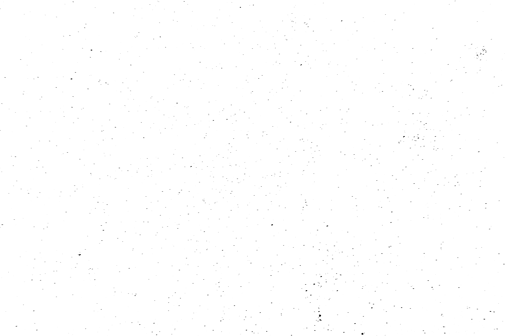
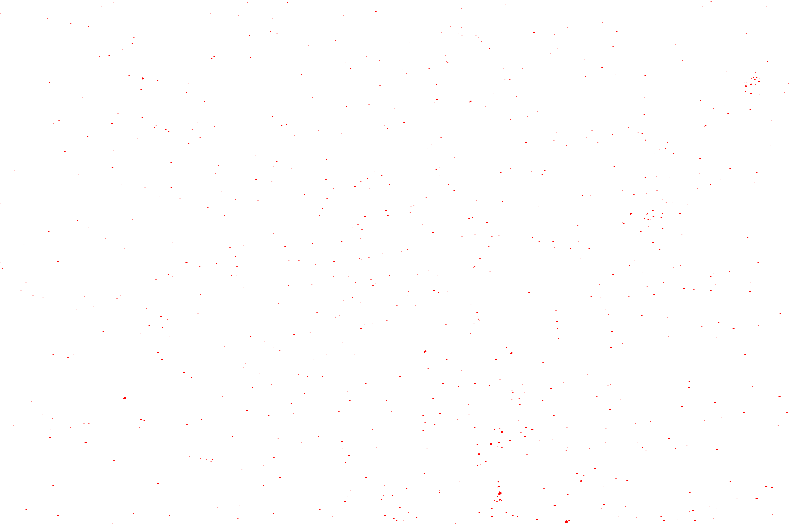

Star Counter
How the Program Works:
My program(click me) first starts by loading a grayscale copy of the original image. It then creates a brightness map where it finds all pixels with an lumination level greater than my set threshold(I used 150) and stores said pixels as black and all below the threshold become white. This image can be found below as Uncounted Image Output Peak Map. Next up is to count all the stars, to do this we have to make sure we don't count the same stars twice so I had to come up with an algorithm to ignore stars that have already been counted. That algorithm scans for black pixels and it increments a counter by 1 if the star hasnt been counted yet. The counted pixel is changed to red. If the algorithm scans and finds a black pixel that has a red pixel adjacent to it, it too is changed to red but the counter is NOT incremented. After every pixel has been scanned it outputs the number of unique stars.
My program found 1821 stars.
Images:
The Original Image

Image Converted to Grayscale

Uncounted Image Output Peak Map
Note: the pixels are black where stars were found.
Counted Image Output Peak Map
Note: this is the same as the image above except the black pixels have become red. This is a result of the algorithm I used to count the clumps of pixels.
